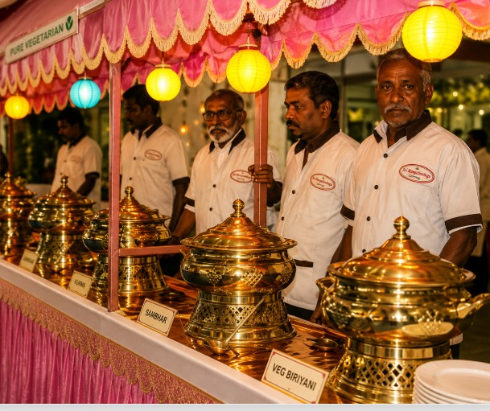

SRI MANGALAMBIGA
CATERING SERVICES
BOOK AN EVENT
Traditional flavours, thoughtful presentation and warm hospitality come together to make every celebration special.
We believe catering is not simply about serving food. It is about creating an experience that your guests remember.
We celebrate the richness of traditional Indian and Tamil cuisine, bringing familiar flavours to your special occasions.
01Our catering experience is centred around vegetarian food and the diverse flavours of traditional Indian cuisine.
02Thoughtful preparation and attention to food quality help create a satisfying experience for your guests.
03From banana-leaf dining to buffet presentation, we believe food should look as inviting as it tastes.
04Friendly and attentive service helps create a comfortable and welcoming atmosphere for your guests.
05Whether it is a family gathering, function or special event, we work to make the dining experience memorable.
06
When you choose Sri Mangalambiga, our focus is on making the food and catering experience one less thing for you to worry about.
We bring together traditional flavours, thoughtful presentation and service with the aim of making your occasion comfortable and memorable.
EXPLORE OUR SERVICESGood food has always been part of the way we celebrate. Our goal is to preserve that feeling through authentic vegetarian cuisine and generous hospitality.

Traditional flavours at the heart of every dining experience.
Food arranged and served with attention to detail.
A warm and welcoming experience for every guest.
Thoughtful attention from planning through service.
Let Sri Mangalambiga bring traditional flavours and warm hospitality to your next celebration.
BOOK AN EVENT